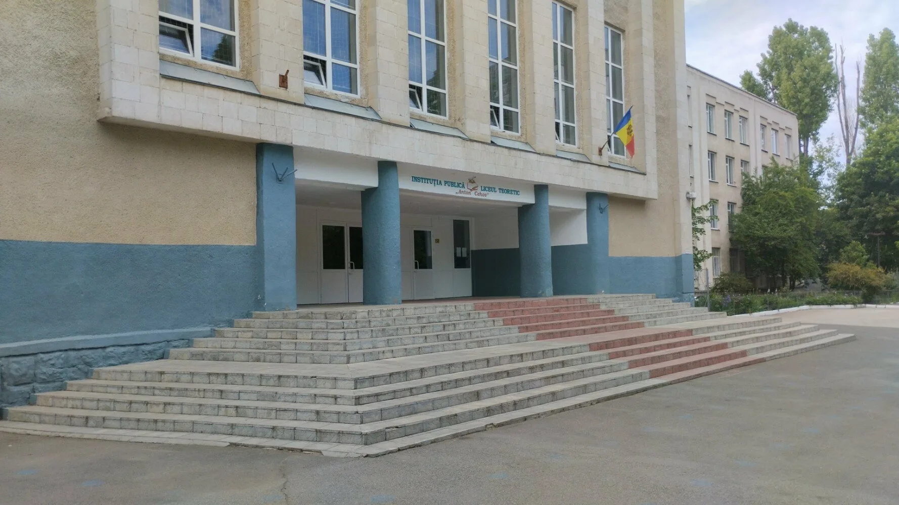

Дурка имени Антона Чехова - это удивительное место где людей лечат от тяжелого псих. расстройства под названием адекватность. Находится на Alba Iulia 200/2. Наша дурка излечила и обострила целые поколения. Здесь вы сможете прочувствовать всю мощь весеннего обострения и насладиться всеми прелестями жизни в дурке. Вы сможете пообщаться с такими же неадекватными людьми, как и вы после несколько дней пребывания в нашей дурке, и вместе с ними пережить все радости жизни в дурке. Еще вы сможете насладиться всеми прелестями жизни в дурке, такими как: отсутствие адекватности, отсутствие правил и норм, отсутствие порядка и дисциплины, отсутствие логики и опасного здравого смысла. Наш главный девиз — «Обостряйся!» — отражает нашу философию и подход к жизни. Наш главный символ — это Палата № 6, а именно её писатель Антон Чехов, который является нашим вдохновителем и примером для подражания.
